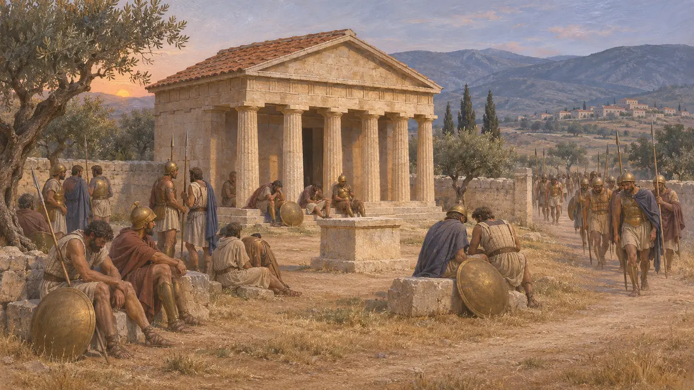
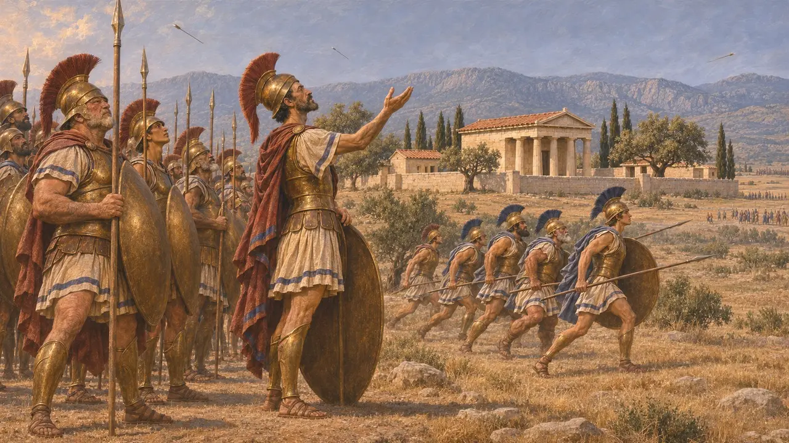
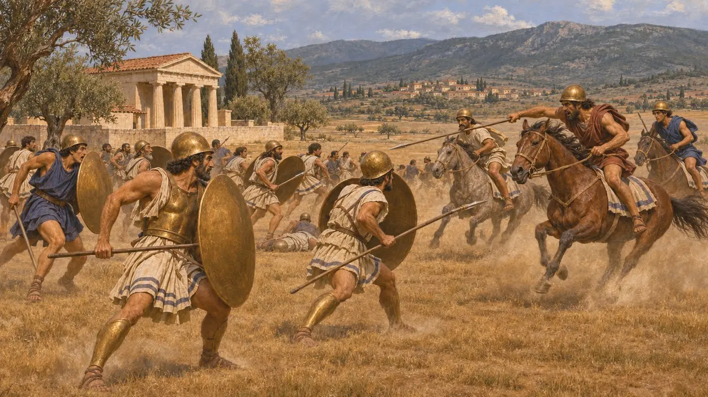
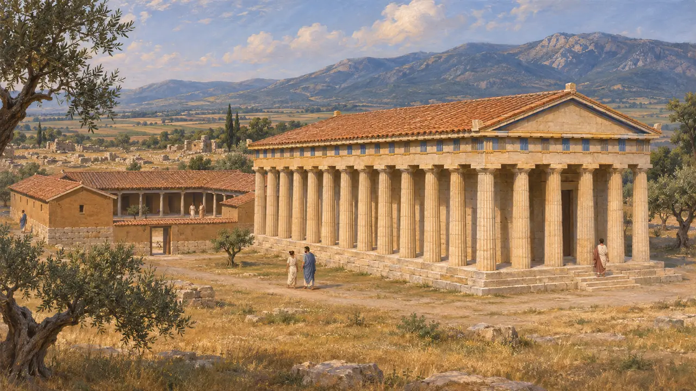
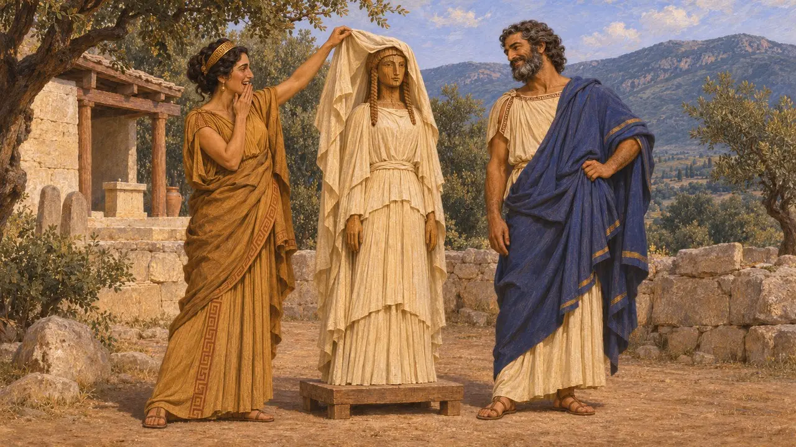

Santuário de Hera
O recinto de Hera diante de Plateia, na Beócia, um marco da batalha de 479 AEC
Os plateenses honravam Hera num santuário erguido diante de sua cidade. Na batalha de Plateia, em 479 AEC, ele se tornou um ponto fixo da narrativa. Muitos contingentes aliados pararam ali após uma confusa marcha noturna, e o comandante espartano Pausânias voltou-se para ele a fim de orar antes que seus homens investissem contra o exército persa de Mardônio.
No jogo: O santuário figura no mapa de Plateia como estrutura histórica. O jogador não pode construí-lo.

A parada na marcha noturna
Relato antigoHeródoto diz que os gregos estavam com pouca água e eram acossados pela cavalaria persa, por isso planejaram deslocar-se à noite para uma nova posição chamada a Ilha. Os contingentes do centro não foram para lá. Recuaram às pressas em direção a Plateia e se detiveram no Heraion. Ele o situa diante da cidade, a cerca de vinte estádios da fonte de Gargáfia. Os espartanos e os atenienses ficaram sozinhos, a certa distância.
Herodotus 9.49-52

Pausânias ora a Hera
Relato antigoHeródoto conta que, quando os persas atacaram os espartanos e os tegeatas na manhã seguinte, os sacrifícios deram maus presságios, e os hoplitas permaneceram imóveis sob a chuva de flechas. Pausânias voltou o olhar para o Heraion dos plateenses e suplicou à deusa que não deixasse os gregos serem privados de sua esperança. Enquanto ele ainda orava, os tegeatas avançaram. Pouco depois, os presságios se tornaram favoráveis e os espartanos também avançaram.
Herodotus 9.61-62

As tropas do Heraion chegam tarde
Relato antigoHeródoto diz que os gregos acampados em torno do Heraion não tomaram parte nos principais combates. Quando souberam que Pausânias estava vencendo, partiram em desordem. Os megarenses e os fliásios atravessaram a planície aberta e foram surpreendidos pela cavalaria tebana, que matou cerca de seiscentos deles.
Herodotus 9.69

O templo posterior e seu local
DisputadoTucídides diz que, depois que Plateia caiu diante de Esparta e Tebas em 427 AEC e foi arrasada, construiu-se uma grande hospedaria perto do Hereu, junto com um templo de pedra dedicado a Hera, com cerca de cem pés de comprimento. Pausânias, o escritor de viagens, viu mais tarde em Plateia um templo de Hera com estátuas de Hera e Reia feitas por Praxíteles. Os estudiosos modernos ainda divergem sobre onde ficava o santuário de 479 AEC, o que afeta a reconstrução dos movimentos da batalha.
Thucydides 3.68; Pausanias, Description of Greece 9.2; W. K. Pritchett, Studies in Ancient Greek Topography, 1965

Hera do Citerão e as Dedálias
Lenda posteriorPausânias, o escritor de viagens, conta uma história da região. Hera brigou com Zeus e retirou-se para o Citéron. Zeus a reconquistou fingindo casar-se com uma figura de madeira vestida de noiva. Os plateenses diziam que essa era a origem de seu festival das Dédalas, celebrado em honra de Hera. O relato foi registrado por escrito mais de seis séculos após a batalha.
Pausanias, Description of Greece 9.3
Fontes
- Herodotus, Histories 9.49-52, 9.61-62, 9.69
- Thucydides 3.68
- Pausanias, Description of Greece 9.2-3
- W. K. Pritchett, Studies in Ancient Greek Topography, 1965
- J. F. Lazenby, The Defence of Greece 490-479 BC, 1993